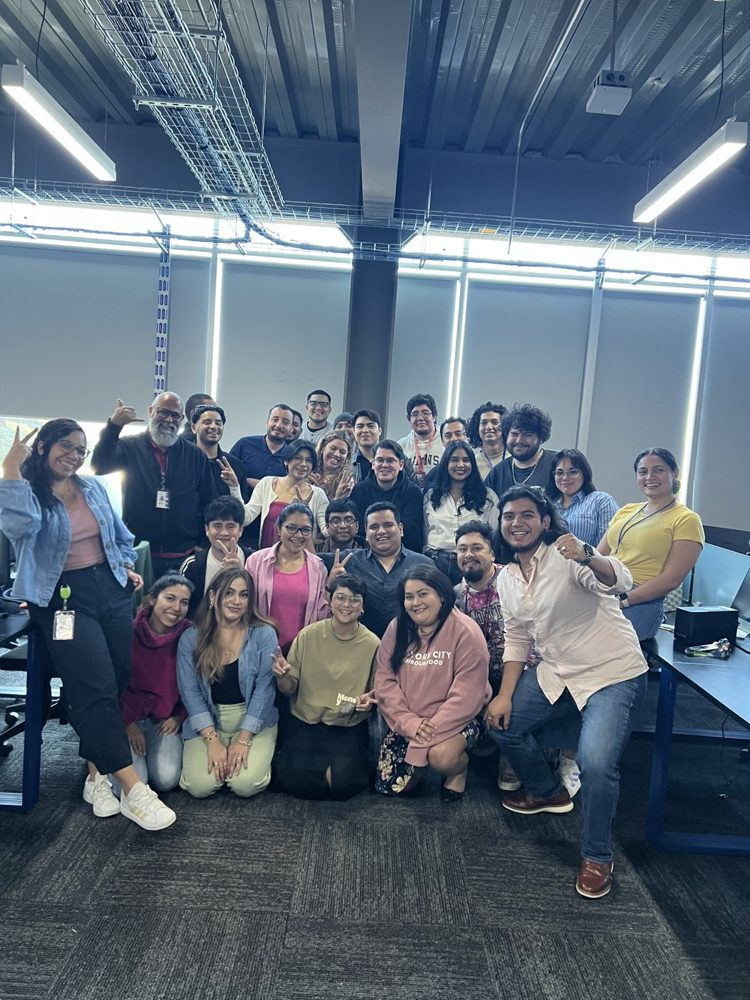
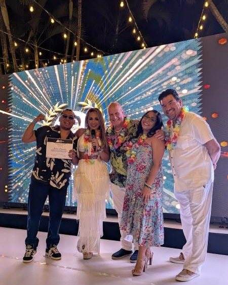
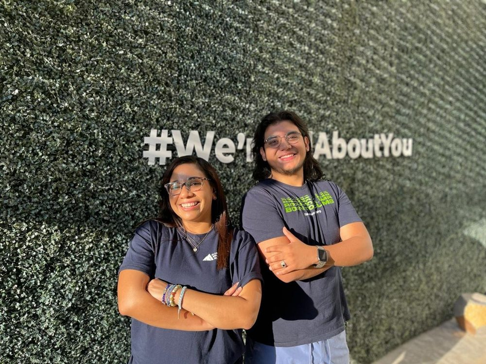

Animated, functional websites
Landing pages and sites that move, load fast and convert. Like the one you're on.
El Salvador · Remote
Growth Marketing & Creative Specialist. I design the brand, build the ad, run it on Google and Meta, read the numbers and lead the team that ships it. Marketing graduate (UCA) with 5+ years in marketing, ad operations and team leadership for U.S. travel and fintech accounts.
What I do
Open any project to see every piece and the story behind it: the problem, what I did and what changed.
The same loop I ran with teams supporting U.S. marketing operations, now applied to every campaign.
Read the funnel by stage and find the metric that is really breaking.
Design hooks and visuals for the audience's real pain points, per platform.
Set up, traffic and QA the campaign on Google and Meta.
Test, move budget to winners and report it in a dashboard anyone can read.
I'm Joshua, a marketer who designs. I started in social media sales and grew into leading 20+ people and supervising ad operations for U.S. brands. I'm proactive, clear when I communicate, and I turn data into actions a team can follow.
Led 5+ Ad Ops agents and campaign managers for a major U.S. online travel brand: Google Ads setup, creative deployment, billing cycles.
Built a new account from 0 to 40+ headcount. SOPs, QA and KPI frameworks, incentives and hiring.
Booked demo classes as the core sales strategy.
Landing pages and sites that move, load fast and convert. Like the one you're on.
Quality motion and audiovisual pieces, planned inside a creative strategy, not just edited.
Beyond generating images: I use AI to build digital assets, automations and tools that give businesses real impact.
Certificates and moments that back up how I work.




I built a team from zero to 40+ people, coached them with data instead of opinions, and celebrated the wins together. The recognition below came from that work.
 2024 · Glass Mountain BPO
2024 · Glass Mountain BPOAwarded by the Country Director and the Executive Vice President for progressive leadership growth and operational excellence on the FORTH account.
 April 2026 · Google
April 2026 · GoogleGoogle certification in ad trafficking, campaign optimization and delivery against business goals.
Universidad Centroamericana José Simeón Cañas, San Salvador. Plus Graphic Design and Digital Marketing training.
Program for outstanding students from 9th grade through high school. Earned a full university scholarship.
I'm available for in-house roles in digital marketing and for freelance campaigns. Tell me what you're launching.